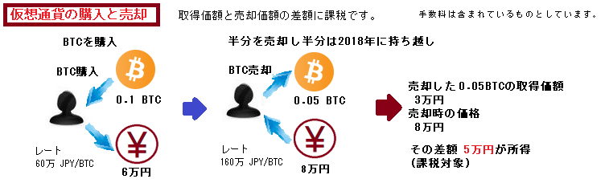
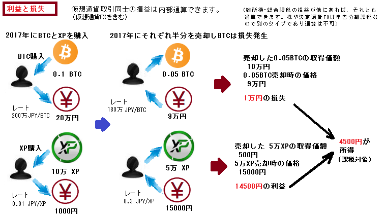
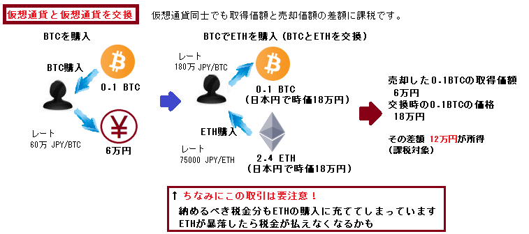
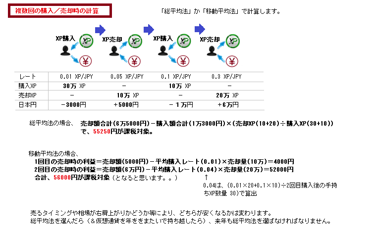

仮想通貨の所得の計算例を図にしました。
色々と勘違いしている人がいたことと自分の理解のために作成しました。
嘘があったらごめんなさい。。
詳しくは国税庁の資料を参照 → 仮想通貨に関する所得の計算方法等について PDF
※図の「課税対象」は「支払う税金」ではありません。所得に応じた税率（5％〜45％）を掛けて算出します。 税率は仮想通貨に限らない部分なので、そのような計算は国税庁の「確定申告書等作成コーナー」で作成すれば自動で計算してくれます。
↑損失は利益から減額できない、という大きな勘違いをしている人がいます。
円換算で価値が5倍、10倍、50倍、に増えた仮想通貨の多くを他の仮想通貨に交換して2018年を迎えた方は要注意です。 評価額が高ければ「半額は税金」の意識で。マジで。円に替えて税金分を引き出しましょう。
何百回も取引していると、とても手計算なんてできませんね。
仮想通貨に強い税理士さんを探すか、誰か作成してくれているはずの優秀なExcelをWebで探しましょう。
あとXPにはrainもありますね。マイニングと同じ考えなんだと思いますが、、どうでしょうね。
作成者:はやゆう
modified: 2018/01/06